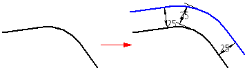
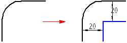
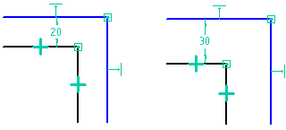

Offset command
Use the Offset command to draw an offset copy of a 2D element or a continuous set of connected 2D elements. This command copies elements while maintaining characteristics such as the angle of lines and the center point of arcs and circles.

This command is for 2D elements only. If you want to select other edges or edges of other parts, use the Include command.
In addition, the Offset command:
-
Consumes elements as necessary to create the offset.

-
Places a variational offset constraint that maintains the list of input and output elements and updates changes to these elements automatically during recompute.
-
Places a dimension, which you can use to edit the value of the offset constraint.

Since the offset constraint is variational, you can delete the dimension and add other constraints to control the input and output geometry.
You can select the offset relationship handle to display the command bar and edit the offset value. You can delete the relationship handle to delete the offset constraint
If you want to offset an element in two directions symmetrically, use the Symmetric Offset command.